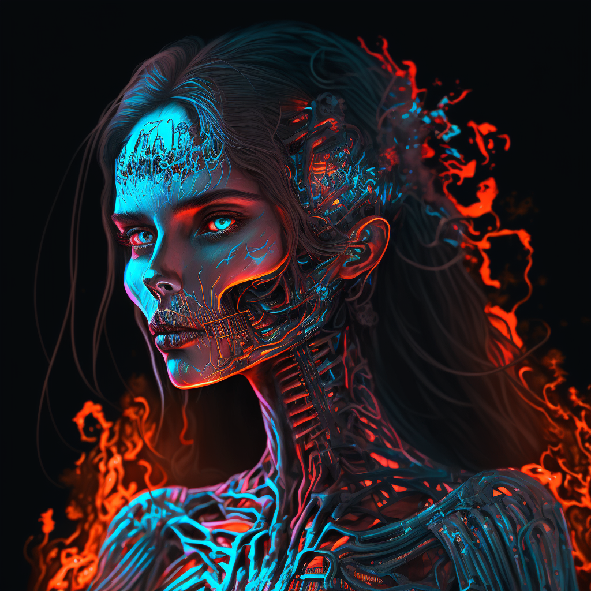
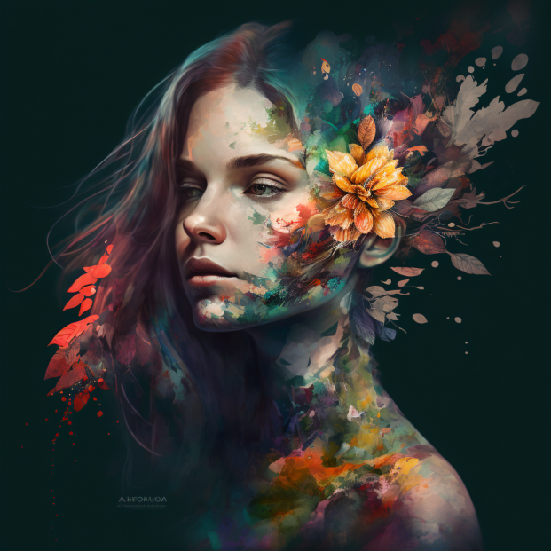
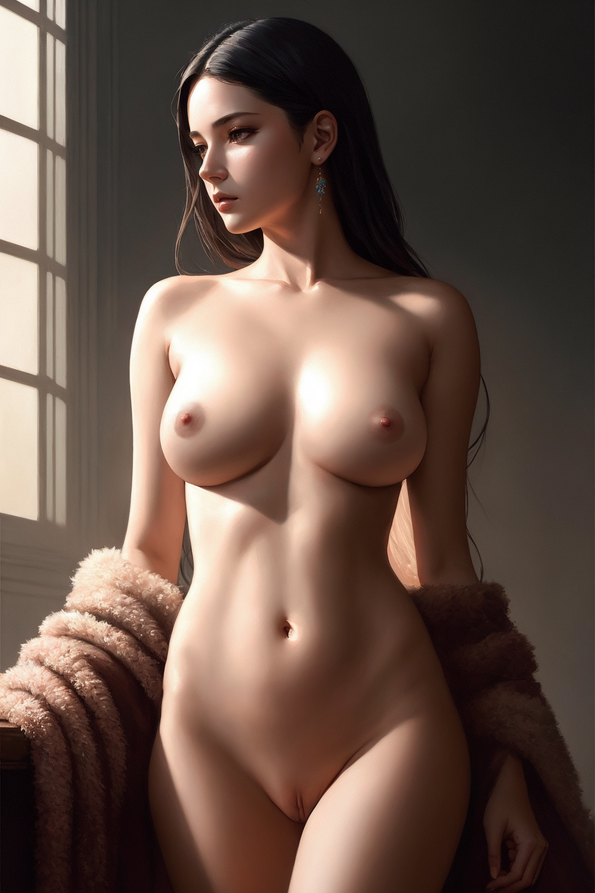
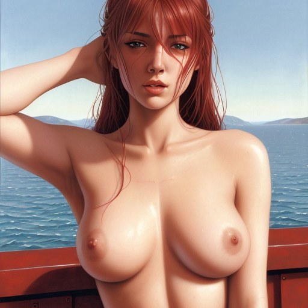
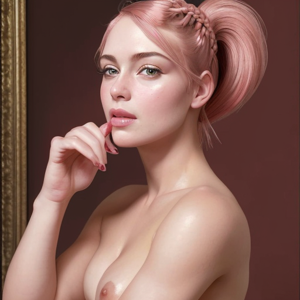

Graph neural networks (GNNs) are intimately related to differential equations governing information
diffusion on graphs. Thinking of GNNs as partial differential equations (PDEs) leads to a new broad
class of GNNs that are able to address in a principled way some of the prominent issues of current
Graph ML models such as depth, oversmoothing, bottlenecks, and graph rewiring.

First page of “Scala graduum Caloris”, a 1701 paper by Sir Isaac Newton published anonymously in the
Philosophical Transactions of the Royal Society. Shown is a temperature scale with 0 corresponding
to the temperature of “winter air when water starts freezing” (aqua incipit gelu rigescere) and 12
representing the temperature measured upon “contact with the human body” (contactum corporis humani).
The highest temperature of 210 is that of “kitchen fire urged by bellows”.
In
March 1701, the Philosophical Transactions of the Royal Society published an anonymous note in
Latin titled “A Scale of the Degrees of Heat” [1]. Though no name was indicated, it was no secret
that Isaac Newton was the author (he would become “Sir Isaac” four years later). In a series of
experiments, Newton observed that
the temperature a hot body loses in a given time
is proportional to the temperature difference between
the object and the environment
- a modern statement of a law that today bears his name [2]. Expressed mathematically, Newton's law
of cooling gives rise to the heat diffusion equation, a partial differential equation (PDE) which
in the simplest form reads
ẋ= aΔx.
Here, x(u,t) denotes the temperature at time t and point u on some domain, the lhs (temporal derivative ẋ)
is the “rate of change of temperature” and the rhs (spatial second-order derivative or the Laplacian Δx)
expresses the local difference between the temperature of a point and its surrounding, and a is the proportion
coefficient known as the thermal diffusivity. This PDE is linear and its solution can be given in closed form
as the convolution of the initial temperature distribution with a time-dependent Gaussian kernel [3],
x(u,t) = x(u,0)﹡exp(-|u|²/4t).
More generally, one has to account for different thermal conduction properties of the object,
leading to a PDE of the form
ẋ(u,t) = div(a(u,t)∇x(u,t))
encoding a more general Fourier's heat transfer law [4].

According to Newton's law of cooling (top), the rate of change of the temperature of a body (ẋ)
is proportional to the difference between its own temperature and that of the surrounding.
The solution of the resulting differential equation has the form of exponential decay.
Fourier's heat transfer law (bottom) provides a more granular local model: the temperature is a
scalar field x, its (negative) gradient is a vector field -∇x representing the flow of heat from
hotter regions (red) to colder ones (blue), and the divergence div(-∇x) is the net flow of the
vector field -∇x through an infinitesimal region around a point.
D
iffusion PDEs arise in many physical processes involving the transfer of “stuff” (whether energy or matter),
or more abstractly, information. In image processing, one can exploit the aforementioned interpretation
of diffusion as linear low-pass filtering for image denoising. However, while removing noise such a filter
also undesirably blurs transitions between regions of different colour or brightness (“edges”).
An influential insight of Pietro Perona and Jitendra Malik [5] was to consider an adaptive diffusivity
coefficient inversely dependent on the norm of the image gradient |∇x|: this way, diffusion is strong in
“flat” regions (where |∇x|≈0) and weak in the presence of brightness discontinuities (where |∇x| is large).
The result was a nonlinear filter capable of removing noise from the image while preserving edges.

Left: original image, middle: Gaussian filter, right: nonlinear adaptive diffusion (shown is a conceptually similar
filter from Q. Yang, “Recursive bilateral filtering” (2012), ECCV).
Perona-Malik diffusion and similar schemes created an entire field of PDE-based techniques that
also drew inspiration and methods from geometry, calculus of variations, and numerical analysis [6].
For me personally, the works of Ron Kimmel on the numerical geometry of images [7] were the reason to
fall in love with differential geometry and do a PhD on this topic. Variational and PDE-based methods
dominated the stage of image processing and computer vision for nearly twenty years, ceding to deep
learning in the second decade of the 2000s [8].
In
our recent work at Twitter [9], we relied on the same philosophy to take a fresh look at graph neural networks.
GNNs operate by exchanging information between adjacent nodes in the form of message passing, a process
that is conceptually equivalent to diffusion. In this case, the base space is the graph and the diffusion
happens along edges, where the analogy of the spatial derivatives is the differences between adjacent node
features.
Formally, the generalisation of diffusion processes to graphs is almost straightforward:
the equation looks identical,
Ẋ(t) =div(A(X(t))∇X(t))
where X(t) is now an n*d matrix of node features at time t, the gradient is an operator assigning
to each edge u~v the difference of the respective node feature vectors, (∇X)ᵤᵥ=xᵥ-xᵤ wheres the
divergence at node u sums the features of edges emanating from it, (div(X))ᵤ= ∑ᵥ wᵤᵥ xᵤᵥ [10].
The diffusivity is represented by a matrix-valued function of the form A(X)=diag(a(xᵤ, xᵥ)),
where, as before, a is a function determining the strength of diffusion along edge u~v based on
the similarity of the respective features xᵤ and xᵥ [11].

Node and edge features are analogous to scalar and vector fields on graphs, respectively.
The gradient produces edge features of the form (∇X)ᵤᵥ=xᵥ-xᵤ. The divergence produces node
features of the form (div(X))ᵤ= ∑ᵥ wᵤᵥ xᵤᵥ.
The graph diffusion equation can be written conveniently as a matrix differential equation of the form
Ẋ (t) =(A (X (t))-I) X (t).
In most cases [12], this differential equation has no closed-form solution and has to be solved numerically.
There are a plethora of numerical techniques for solving nonlinear diffusion equations differing primarily
in the choice of spatial and temporal discretisation.
T
he simplest discretisation replaces the temporal derivative Ẋ with the forward time difference,
[X(k+1)-X(k)]/𝜏=[A(X(k))-I]X(k)
where k denotes the discrete time index (iteration number) and 𝜏 is the step size such that t=k𝜏.
Rewriting the above formula as
X(k+1)=[(1-𝜏)I+𝜏A(X(k))]X(k)=Q(k)X(k)
we get the formula of an explicit or forward Euler scheme, where the next iteration X(k+1) is
computed from the previous one X(k) by applying a linear operator Q(k) [13], starting from some X(0).
This scheme is numerically stable (in the sense that a small perturbation in the input X(0) results in
a small perturbation to the output X(k)) only when the time step is sufficiently small.
Using backward time difference to discretise the temporal derivative leads to the (semi-)implicit scheme,
[(1+𝜏)I-𝜏A(X (k))]X(k + 1) = B (k) X (k + 1) = X (k)
named thus because deducing the next iterate from the previous one requires solving a linear system
amounting to the inversion of B (in most cases carried out approximately, by a few iterations of a linear solver).
This scheme is unconditionally stable, meaning that we can use any 𝜏>0 without worrying that the iterations
will blow up.
These are the conceptually simplest discretisation techniques that do not necessarily work the best in practice.
In the PDE literature, it is common to use multi-step schemes such as Runge-Kutta [14] where the subsequent
iterate is computed as a linear combination of a few previous ones. Both the explicit and implicit cases can
be made multi-step. Furthermore, the step size can be made adaptive, depending on the approximation error [15].

Block-diagram representation of different discretisation schemes for the graph diffusion equation
(left-to-right: single step explicit Euler, multi-step fourth-order Runge-Kutta, single step implicit).
A denotes the diffusion operator;𝜏 is the time step size.
D
iffusion equations with a parametric diffusivity function optimised for a given task define a broad
family of graph neural network-like architectures we call Graph Neural Diffusion (or, somewhat immodestly,
GRAND for short). The output is the solution X(T) of the diffusion equation at some end time T.
Many popular GNN architectures can be formalised as instances of GRAND — parametric discretised graph
diffusion equations. Specifically, the explicit scheme mentioned above has the form of a Graph Attention
Network [16], where our diffusivity plays the role of attention.

In Graph Neural Diffusion, explicit GNN layers are replaced with the continuous analog of diffusion time.
This scheme allows training deep networks (running the diffusion for a long time) without experiencing
performance degradation.
I
mplicit schemes allow using larger time steps and thus fewer iterations (“layers”) at the expense of
the computational complexity of the iteration, which requires inversion of the diffusion operator.
The diffusion operator (the matrix A in our equation) has the same structure of the adjacency matrix of
the graph (1-hop filter), while its inverse is usually a dense matrix that can be interpreted as a
multi-hop filter.
Since the efficiency of matrix inversion crucially depends on the structure of the matrix, in some
situations it might be advantageous to decouple the graph used for diffusion from the input graph.
Such techniques, collectively known as graph rewiring, have become a popular approach to deal with
scalability or information bottlenecks in GNNs. The diffusion framework offers a principled view on
graph rewiring by considering the graph as a spatial discretisation of some continuous object
(e.g. a manifold) [18], and some discretisations are more advantageous numerically.

Different discretisations of the 2D Laplacian operator (any convex combination of these
discretisations is also a valid one). Choosing a discretisation, possibly different at each
point, is a Euclidean analogy of “graph rewiring”.
G
raph Neural Diffusion provides a principled mathematical framework for studying many popular
architectures for deep learning on graphs as well as a blueprint for developing new ones.
This mindset sheds new light on some of the common issues of GNNs such as feature oversmoothing
and the difficulty of designing deep neural networks as well as heuristic techniques such as graph
rewiring. More broadly, we believe that exploring the connections between graph ML, differential
equations, and geometry and leveraging the vast literature on these topics will lead to new interesting
results in the field.
In this chapter, we will look at two neural networks that use diffusion technology to create
images of the highest quality in a short period of time.
M
idjourney is a neural network that generates images based on text queries.
It was created by scientist David Holtz, who worked at the NASA Research Center and the Max Planck Institute.
Midjourney can be considered a technological breakthrough in the field of artificial intelligence.
Its closest competitors are Dall—E 2 (closed neural network) and Dall-E Mini (rather, entertainment).
Unlike them, Midjourney is open and has an applied value — it quickly and efficiently converts text into images.
Midjourney is currently in beta testing and is available to users worldwide.
This means that anyone can create images based on text queries.
The beta version of Midjourney is only available in Discord.
Official website of Discord
H
ow to generate an image:
- Open any Newbies chat and start writing the / command. You will see a list of available commands.
- Select /imagine. Along with it, Prompt will pop up — a mandatory part of the command that cannot be deleted.
- After Prompt, enter your request, according to which Midjourney will generate an image.
You can write anything except forbidden words. It is better to formulate queries in English.
- Send a message to the bot and wait — the neural network will create a drawing before your eyes.
W
hat is forbidden to generate
You cannot enter queries and individual words that do not correspond to the PG13 — 13+ rating.
Everything related to alcohol, narcotic substances, swearing, sexual overtones is banned.
Violation of the rules threatens to restrict actions up to the complete blocking of the account in Midjourney.
Y
You can make the right request with the help of technical documentation describing all the functions
available in the bot at the moment.
Study it Official Midjourney Documentation
Official tags can also help you Official Midjourney Tags
G
allery of the best paintings created with Midjourney:
Official Midjourney Gallary
M
y results of using the service:


S
table Diffusion is a latent text-to-image diffusion model capable of generating photo-realistic
images given any text input, cultivates autonomous freedom to produce incredible imagery, empowers
billions of people to create stunning art within seconds.
The program from the Stability AI group went public in August 2022. The neural network can qualitatively
generate images based on a text query, finish sketches and alter reference images in its own way.
All this is free, and the open source code allows you to install Stable Diffusion on your computer and
use your own computing power.
There is also a downside to this: not all devices fit the system requirements, and programming skills
are needed to use the full version of Stable Diffusion. But enthusiasts have already developed websites,
applications, bots and programs based on the network. We figured out what is interesting about Stable Diffusion
and how to try a neural network, even if you don't know how to program.
H
ow to install StableDiffusion:
G
uides how to use:
Guide,
Manual
S
table Diffusion allows you to create content that cannot be created using other neural networks,
using a huge number of user libraries. Unlike Midjourney, you can generate NSFW content in it in
the form you want.
M
y results of using the service:



